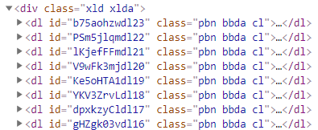

给网页添加自动添页功能
Discuz网站里的很多网页因为内容过多无法一次性显示，所以需要分页显示。在这样的网页上有个翻页按钮组合供用户翻页。但在手机里更常见的是当用户浏览到一页的尾部时，下一页的内容会自动添加到浏览器里，如在手机和iPad上看新浪博客就是这样。本文介绍下利用一个叫infinite scroll的函数库（链接），我们可以给Discuz网页加上自动添页功能。
首先要引入这个函数文件，在文件 template/default/common/header_common.htm的尾部加上
<script src="https://unpkg.com/infinite-scroll@3/dist/infinite-scroll.pkgd.min.js"></script>
这里我们直接使用内容分发网络(CDN)里的这个文件，也可以将它下载到服务器里使用。
接下来要改翻页按钮组合，这是一个由 source/class/helper_page.php 里的函数multi提供的功能，在很多个模板文件里都是按类似于下面的方式使用的：
<!--{if $multi}--><div class="pgs cl mtm">$multi</div><!--{/if}-->
我们可以修改这个函数来给所有需要翻页的网页添加自动添页功能，也可以修改单个模板文件来给单个网页添加自动添页功能。本文考虑后者，它的好处是只需要修改模板文件，而且不影响其它网页。
１）记录列表页的自动添页
修改模板文件 template/default/home/space_doing.htm，首先删掉翻页按钮组：
<div class="pgs cl mtm">$multi</div>
然后在结尾一句
<!--{template common/footer}-->
前加入
<!--{if $multi}-->
<script type="text/javascript">
var elem = document.querySelector('.xld');
var infScroll = new InfiniteScroll(elem, {
path: '$theurl&page={{#}}',
append: '.bbda',
history: false,
});
</script>
<!--{/if}-->
代码中的xld和bbda是什么意思呢？检查一下记录列表页里的html元素结构不难发现，每个记录（包含它下面的所有回复）是一个具有bbda类名的元素，而所有这些元素都包含在一个具有xld类名的元素里。所以这句代码的意思就是在得到下一页的内容后，从中取出所有具有bbda类名的元素，把它们添加到具有xld类名的元素内容里。这也就是说从下一页的内容里取出所有的记录，加到当前的记录列表的尾部。

$theurl 在调用这个模板文件的脚本文件里定义，它就是记录列表页的路径里不带页数的部分，而{{#}}是这个函数使用的一个代表页数的特殊记号。所以上述代码的path部分的意思是说在记录列表页的路径里不带页数的部分后添加&page=1的话就是第一页的路径，同样第二页的路径是类似的不过结尾部分是&page=2, 依此类推可以得到所以页数的路径。我们需要告诉这个函数所有分页的路径，它才可以帮我们在需要时自动获取。
另外history赋值为false的话，在添页时不改变浏览器网页路径条里的内容；而如果这个值为true的话，浏览器网页路径条就会显示当前获取的最新一页的路径。
２）日志列表页的自动添页
和上面的做法完全相同，修改模板文件 template/default/home/space_blog_list.htm，首先删掉翻页按钮组，然后在结尾一句前加入同样的一段话。
３）日志页上评论的自动添页
和上面的做法类似，修改模板文件 template/default/home/space_blog_view.htm，首先删掉翻页按钮组，
<div class="pgs cl mbm">$multi</div>
然后在结尾一句前加入
<!--{if $multi }-->
<script type="text/javascript">
var elem = document.querySelector('.xld');
var infScroll = new InfiniteScroll(elem, {
path: 'home.php?mod=space&uid=$blog[uid]&do=$do&id=$id&page={{#}}#comment',
append: '.bbda',
history: false,
});
</script>
<!--{/if}-->